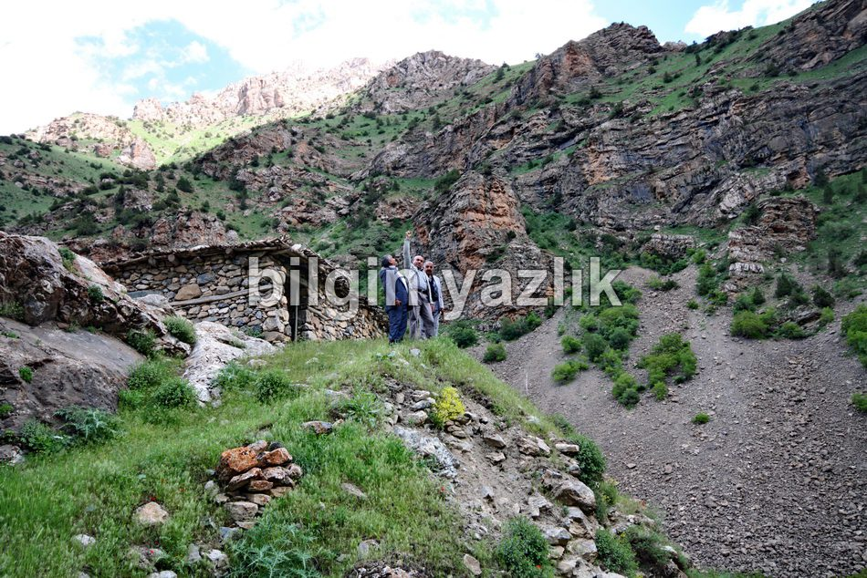
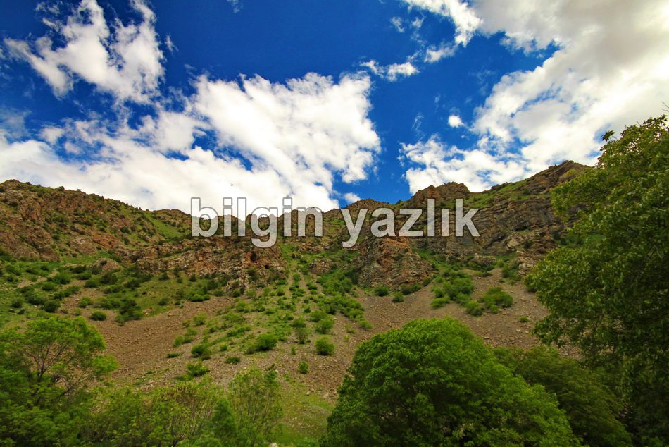
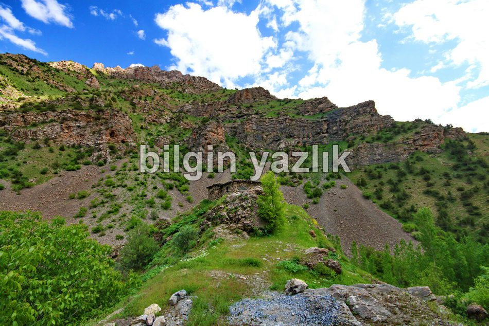
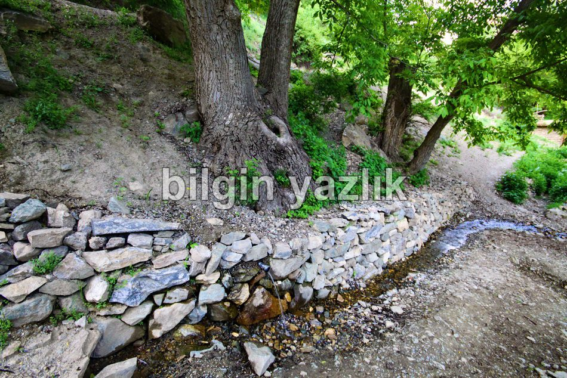

Van Gölü Havzası · 30 Mayıs 2013
Osman Begi Kalesi
Çatak ilçesinin doğusunda Norduz çayının hemen kenarında kurulmuş olan bu kaleden bugün günümüze pek bir şey kalmamış. Üstünde bugün bir kulübe yer alıyor. Kalenin yıllarca Osman Begi aşiretine ev sahipliği yaptığı bölgedeki köylerde anlatılıyor. Kale yüksek bir kayanın uç noktasına kurulmuş ve bölgeye hakim bir noktada yer alıyor. Kalenin eteğinde bugün sadece temelleri kalmış olan birkaç ev yer alıyor, evlerin yanında ise bir köy çeşmesi ve yukarı kısımda ise bir mezarlık yer alıyor. Ağaçların içerisinde, insan boyu çayırların arasında mükemmel bir güzellik sunuyor bu kale. Kale bölgede Kasr, Kasrik gibi adlarla anılıyor.









Bu yazı taliyol arşivinden taşınmıştır. · özgün kayıt